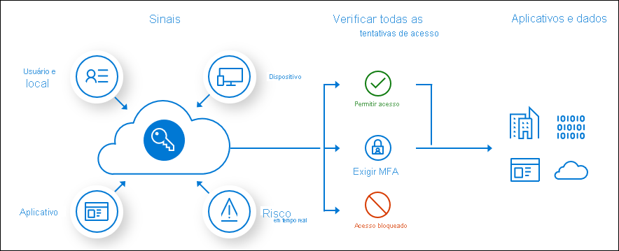

Controle de acesso Azure AD.
Basicamente, o Azure AD é responsável pela administração e controle
de acesso para a maioria dos produtos Azure.
O Azure AD oferece 2 tipos de controle de acesso, o acesso baseado em
condicional e o controle de acesso baseado em funções.
Com a infinidade de técnicas de ataques, a Azure AD constantemente está
aprimorando a segurança de acesso.
Um ponto de atenção aqui, é que para utilizar todas as capacidades que o
Azure AD oferece, o administrador deve assinar uma versão Premium.
Todos os temas abordados aqui serão sobre Azure AD, não vamos abordar o
Microsoft AD.
Acesso baseado em condicional e funções.

O acesso condicional é uma forma de controlar acesso do usuário condicionando
a alguma outra forma de autenticação.
As condicionais exigidas podem ser a verificação de localização, verificar se o
usuário está em um grupo autorizado, exigir uma segunda autenticação utilizando
um dispositivo, entre outros fatores.
O acesso baseado em funções também conhecido como RBAC
(controle de acesso baseado em função) é utilizado para controlar acessos aos recursos
do Azure AD baseados em funções, que podem ser internas ou personalizadas.
As funções internas são conjuntos de permissões fixas como
Administrador Global que tem acesso total, Administrador de
Usuário que permite criar usuário e grupos, e o Administrador de
cobrança que podem fazer compras, gerenciar assinaturas e tíquete de suporte.
As funções personalizadas permitem a criação de perfis selecionando
os acessos e controles desse perfil.
Conclusão.
O controle de acesso do Azure AD oferece um leque de opções de segurança que garantem
a integridade da plataforma e dos produtos Microsoft baseado em nuvem.